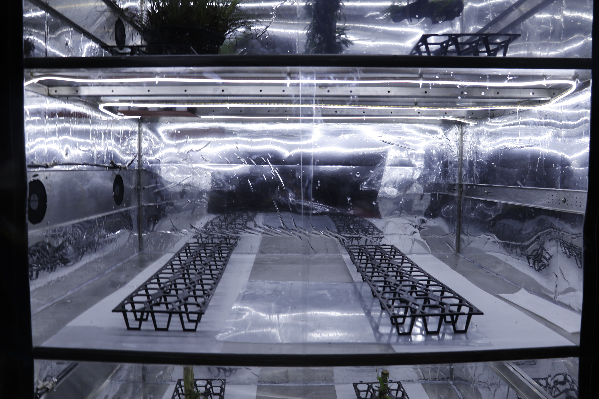
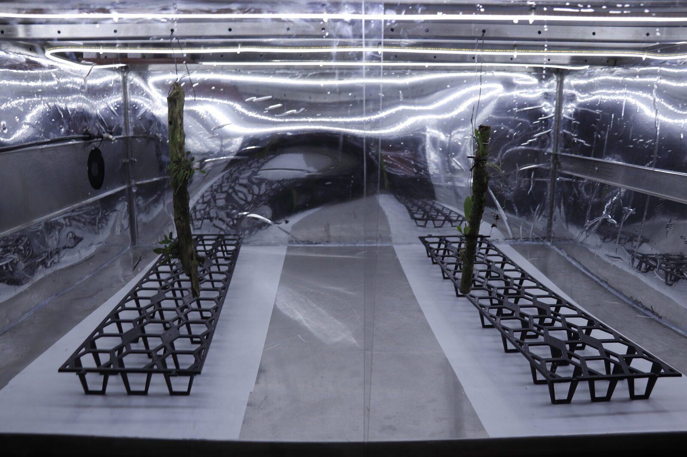
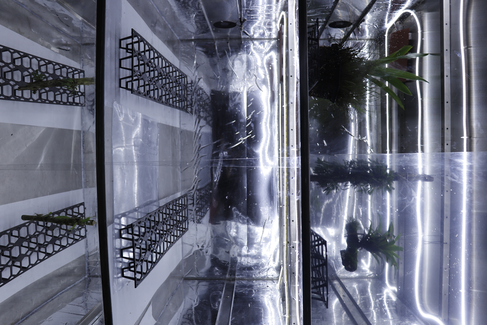
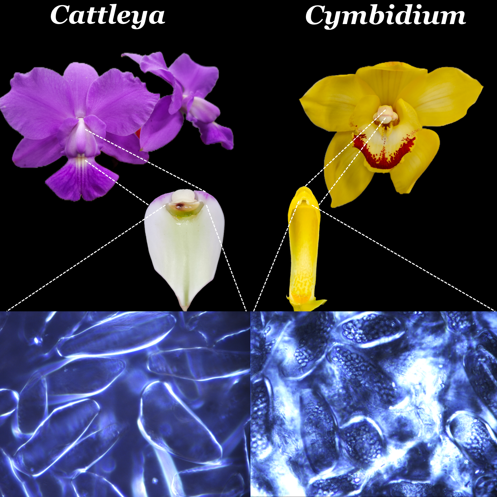

Orchidarc is a research-led organisation. Two active programmes sit behind our fieldwork: the RAR Climate Replicator, for habitat simulation; and a biomaterials programme on the orchid pollination adhesive.
A modular automated greenhouse system developed to simulate orchid habitats for research, conservation and cultivation.

The RAR Climate Replicator is an automated habitat-replication system built in-house by Orchidarc. By integrating sensors, programmable climate control, LED lighting, automated watering and remote monitoring, it recreates the temperature, humidity, airflow and water conditions required by sensitive orchid species.
At its core, the system is a controlled micro-greenhouse — but one designed specifically to reproduce the environmental conditions of natural orchid habitats, not the homogenised conditions of a standard nursery.
The biggest bottleneck in laboratory-based orchid conservation is deflasking — the moment an in-vitro seedling leaves its sterile flask and has to survive in the open air. Mortality at this stage routinely exceeds 50%, and is often much higher. The RAR Climate Replicator gives us a gradient: the seedling moves from sterile flask, through a controlled chamber that reproduces its home habitat, before facing the full variability of the open greenhouse or the wild.
It also lets us ask questions we cannot ask in the field — what happens to Cypripedium seedlings under simulated climate projections for 2050? What humidity regime is actually lethal for Prosthechea vitellina? The chamber becomes an experimental microcosm.
Several configurations are in development, each tuned to a different habitat type: running-water systems for rheophytic species; temporary-immersion systems for Cypripedium mycorrhizal co-culture; high-humidity spray systems for cloud-forest epiphytes.



An orchid bioadhesive, the size of a sesame seed, that holds together one of evolution's most elaborate pollination systems. The subject of our PhD research at the University of Tokyo.

Orchid pollination does not rely on loose pollen. Instead, each flower packs its entire pollen production into two waxy masses — pollinia — that must be transferred whole, by a pollinator, to the stigma of another flower. Holding this system together is a tiny, specialised glue: the viscidium.
The viscidium is a droplet of bioadhesive located at the base of the pollinarium. When a pollinator brushes past, the viscidium attaches the pollinia to the pollinator's body — a bee's back, a moth's tongue, a bird's beak. Minutes later, when the pollinator visits the next flower, the pollinia are deposited on a different, receptive, stigmatic surface.
The viscidium must be an extraordinary material. It has to be sticky enough to bond instantly on contact, durable enough to survive minutes or hours on a moving pollinator, and responsive enough to release cleanly onto the stigma at the right moment. It is, in effect, a natural smart adhesive — and almost nothing is known about how it works at a mechanical or chemical level.
Orchidarc's ongoing doctoral research at the University of Tokyo, in partnership with the University of Sheffield, is studying the viscidium and the related stigmatic gels across a range of orchid genera. The goal is twofold: to understand an under-studied piece of orchid biology, and to characterise a potentially novel class of bio-inspired adhesives that may have practical applications — including in medicine, where tissue adhesives face similar challenges of bonding-in-wet-conditions.
This is the kind of research where conservation and science feed each other directly: the species we study are the species we also protect in the field, and understanding their reproductive mechanics is a direct input to effective conservation.
A new nothogenus and a new nothospecies in the subtribe Laeliinae (Orchidaceae) from Mexico. Phytotaxa. Read ↗
World Orchid Conference, Tainan, Taiwan.
Adhesion Society meeting, Oxford, UK.
Andean Orchid Conference, Cuenca, Ecuador.
Encuentro Mexicano de Orquideología, Oaxaca, Mexico.
Encuentro Mexicano de Orquideología, November 2026 — presenting RAR Climate Replicator research.